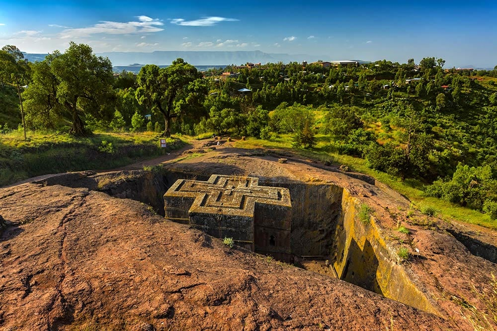
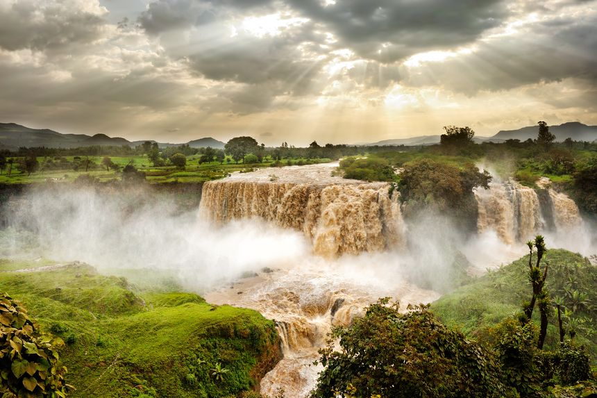
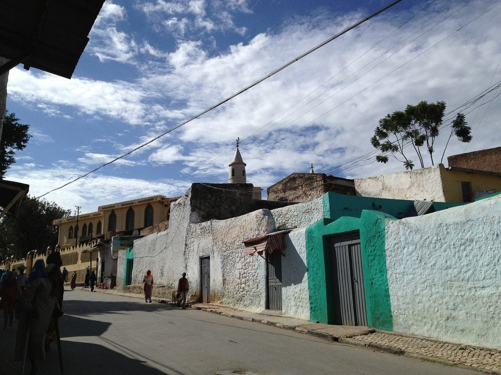
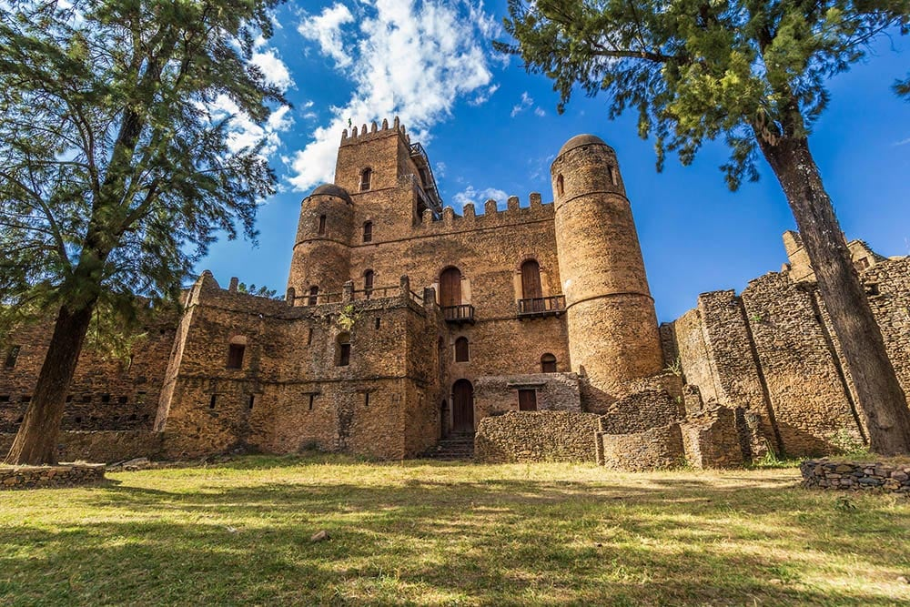

BD
tour
Did you know that Ethiopia has the most important religious pilgrimage centre in all of Africa?
And that it is in Ethiopia that the Ark of the Covenant is hidden?
be inspired with our trip
img 
Lalibela The 11 medieval monolithic cave churches of this 13th-century 'New Jerusalem' are situated in a mountainous region in the heart of Ethiopia near a traditional village with circular-shaped dwellings. Lalibela is a high place of Ethiopian Christianity, still today a place of pilmigrage and devotion.
img 
this is the place where river nile is originated
img 
Harar Jegol Wall
The Harar Jugol Wall in Harar Jugol is the historic fortification surrounding the Ethiopian city which acted as the capital of the Harari Kingdom from 1520 to 1568
img 
Simien Mountains National Park is the largest national park in Ethiopia. Located in the North Gondar Zone of the Amhara Region, its territory covers the highest parts of the Simien Mountains and includes Ras Dashan, the highest point in Ethiopia.
img 
Erta'Ale volcano, the most active centre of Ethiopia is known for its permanent lava-lake activity since 1967, and most probably since 1906
img 
The Fasil Ghebbi is a fortress located in Gondar, Amhara Region, Ethiopia. It was founded in the 17th century by Emperor Fasilides and was the home of Ethiopian emperors. Its unique architecture shows diverse influences including Nubian, Indian, Arab, and Baroque characteristics.